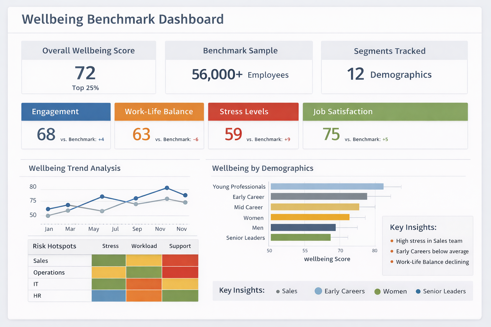
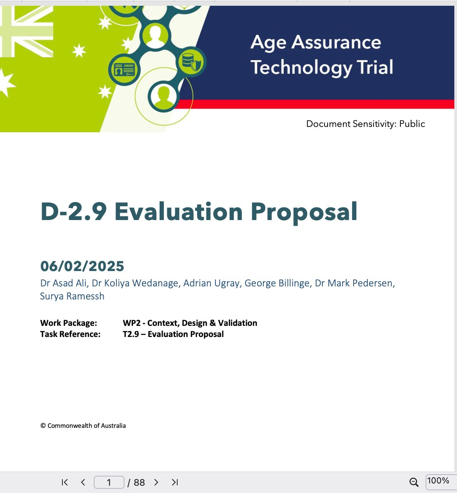

projects
Selected work.

Wellbeing Benchmarking — Robertson Cooper
↗ read more
A people team needed to know which employee groups were at risk — and why. I built a benchmarking pipeline across 56,000+ survey responses, then developed predictive models explaining ~75% of variance in productivity and attrition.

Australian Age Assurance Technology Trial
↗ read more
The Australian Government needed a defensible framework to evaluate 52 biometric vendors for Social Media age-restriction law. I designed the sampling methodology, built the CV pipeline, and co-authored the 88-page public evaluation proposal.

Deepfake Detection — UKRI Research
↗ read more
I built the data architecture, managed GDPR-compliant pipelines across two jurisdictions, and translated findings into practical risk mitigation — presenting to 150+ professionals across three workshops.

Predicting Dashboard Usability — MSc Research
↗ read more
I ran controlled A/B experiments across 1.2M+ interaction logs and built a model to predict engagement quality before deployment — cutting UX friction by ~62% and giving teams a repeatable evaluation method.